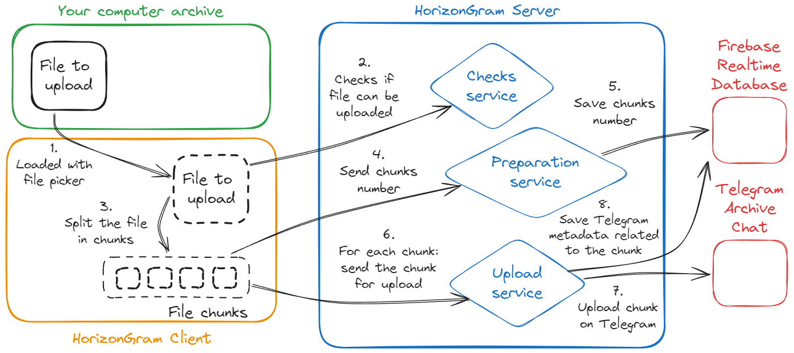

How to contribute
-
Fork the repository
Start by forking the project repository to your own GitHub account. This creates a copy where you can work freely
Go to HorizonGram repository
-
Clone your fork
Clone the forked repository locally to begin working on your features or fixes
-
Create a feature branch
Create a new branch named feature/<BRANCH_NAME> for your changes
-
Make your changes
Implement your new features, bug fixes, or enhancements. Feel free to refer to the project's documentation and existing codebase for guidance
-
Submit a Pull Request (PR)
Once your changes are complete, push them to your fork and open a Pull Request (PR) to the main repository
-
Review and discuss
Your PR will be reviewed. We may suggest improvements or ask for further clarification. Once everything is clear, your PR will be merged into the project!
Customized HorizonGram Client
If you're interested in building a customized client for the cloud storage system, we'd love to hear from you! You can develop your own client in a separate repository.
When the client is done, open an issue on GitHub with the following tags: priority:low and type:enhancement.
Provide a brief description of your idea or customization, include screenshots that showcase the proposed UI and add a link to your repository.
Your issue will be reviewed and, in case it is accepted, your client will be integrated into the HorizonGram repository.
You can open an issue on GitHub in the following way:
-
Add an explanatory title
-
Add a very detailed description. In case you are reporting a bug, clarify when it happens and what steps to follow to reproduce it
-
Add two tags. One with
priority label, one with type label:
-
priority:low
Indicates that the issue does not affect user activity
-
priority:medium
The issue impacts user activity, but user data remains intact
-
priority:low
The issue impacts user activity and the integrity of user data is invalidated
-
type:bug
Something isn't working
-
type:documentation
Improvements or additions to documentation
-
type:enhancement
New feature or request
-
type:question
Further information is requested
Warning
In addition to the listed tags, there are others that indicate whether the report already exists and the status. Well, all tags not listed should not be used.
Note
In case of reports for doubts/suggestions, always set tag priority:low
Status
GET - http://localhost:3000/api/status
Used to check if the server is working
Folder
GET - http://localhost:3000/api/folder
Get folders and files hierarchy
POST - http://localhost:3000/api/folder
Create a new folder
DELETE - http://localhost:3000/api/folder
Delete an existing folder
File
POST - http://localhost:3000/api/file/upload
Upload a file by a single chunk (files that are too large could saturate RAM memory and cause the server to go Out Of Memory)
POST - http://localhost:3000/api/file/download
Download a file in the downloads folder set during HorizonGram setup
POST - http://localhost:3000/api/file/integrity
Checks if a file is corrupted
DELETE - http://localhost:3000/api/file
Delete a file
Chunks
POST - http://localhost:3000/api/chunks/upload/checks
It does some integrity checks on the file to upload
POST - http://localhost:3000/api/chunks/upload/preparation
Reports the number of chunks required to complete the upload of a file
POST - http://localhost:3000/api/chunks/upload
Upload a single chunk of a file
Additional chunks documentation
As stated in the documentation, there are 3 endpoints under the Chunks route: checks, preparation, and upload.
These are three endpoints that must be invoked in order by the FE when uploading a file by splitting into chunks.
First invoked is checks, which takes care of checking whether the file can be uploaded to the cloud.
Now the client must proceed to divide the file to be uploaded into chunks. After that, preparation is invoked, which saves chunks number to the database.
For each chunk, then, upload service will be called.
